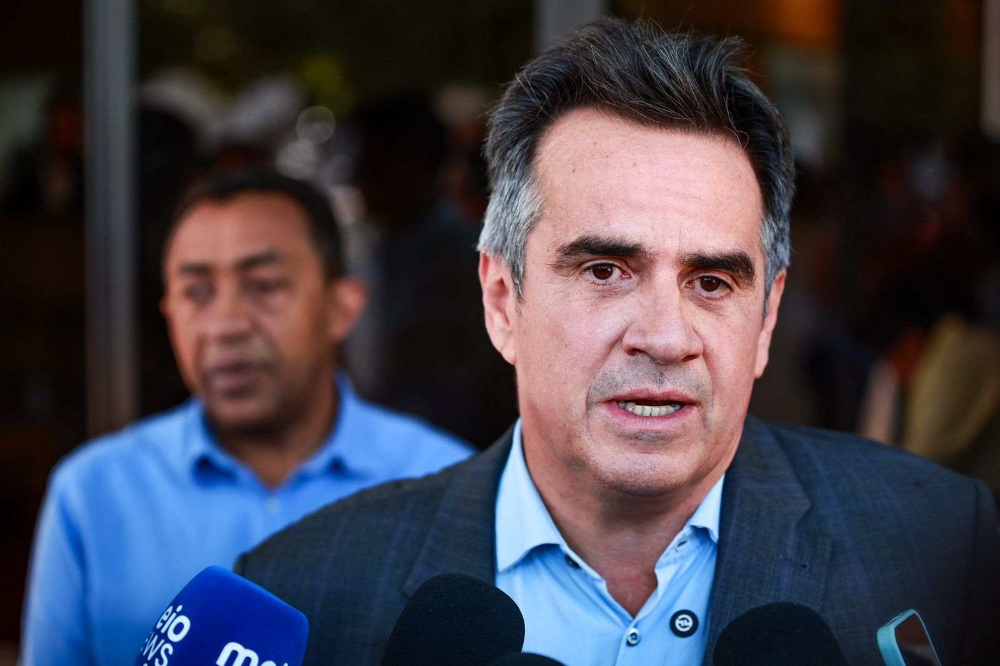

Ciro comenta derrubada do IOF: “bolso do cidadão não é caixa”
27/06/2025
O senador Ciro Nogueira comentou, durante entrevista na manhã desta sexta-feira (27), a derrubada do aumento das alíquotas do Imposto sobre Operações Financeiras (IOF) no Congresso Nacional. O parlamentar piauiense criticou a intenção do presidente Lula de majorar a carga tributária e defendeu que o governo realize cortes nas contas públicas.
Ciro Nogueira defendeu uma mudança na política tributária.
“Isto é o desejo da sociedade. Ninguém aguenta mais pagar imposto neste país. O Brasil tem impostos de primeiro mundo, uma das maiores cargas tributárias do planeta, e serviços de pior qualidade, na saúde, na segurança, dentre outros. Nós não podemos aceitar isso. Eu acho que o governo tem uma gestão muito ineficiente, com excesso de ministérios, cargos e o assalto às nossas estatais, com prejuízos gigantescos”, afirmou.
O senador criticou ainda a imposição de sigilo em atos do governo.
“O governo tem que ter uma gestão eficiente e não pensar que o bolso do contribuinte é um caixa eletrônico ao qual pode recorrer a qualquer momento. Eu acho que tem que haver economia e transparência, principalmente em relação a esse negócio de decretar sigilo de 100 anos sobre gastos públicos. Isso deveria ser proibido. Nós estamos estudando até uma proposta, um projeto que proíba qualquer tipo de sigilo e garanta transparência total a todos os gastos públicos do nosso país”, concluiu.
Vereadores voltam a discutir na Câmara Municipal de Teresina e presidente convoca reunião geral
24/06/2024
Nesta terça, a confusão começou quando vereador Eduardo Draga Alana (PSD) foi à tribuna e criticou a CPI da Águas de Teresina, presidida pelo vereador Petrus Evelyn (PP), que também discutiu, há duas semanas, com a vereadora Samantha Cavalca (PP) pelo mesmo motivo.

Mais uma sessão da Câmara Municipal de Teresina (CMT) terminou em confusão. Nesta terça-feira (24), os vereadores Eduardo Draga Alana (PSD) e Petrus Evelyn (PP) trocaram acusações e o desentendimento levou a uma reunião entre todos os parlamentares.
Mais uma sessão da Câmara Municipal de Teresina (CMT) terminou em confusão. Nesta terça-feira (24), os vereadores Eduardo Draga Alana (PSD) e Petrus Evelyn (PP) trocaram acusações e o desentendimento levou a uma reunião entre todos os parlamentares.
Petrus reagiu dizendo que Draga Alana tem feito acusações contra ele e que vê, na internet, acusações contra o colega. "Já li que você comprou seus votos, que é ligado a facções, será que temos que trazer essas informações para cá? São acusações gravíssimas que acho que você deveria responder", disse.
Draga Alana sugeriu que Petrus abrisse uma CPI para investigar as acusações. "Estamos falando da CPI da Águas de Teresina, que vinculou em vários sistemas de comunicação que você recebeu propina da CPI. Não tem a ver uma coisa com a outra", declarou. "Agora, se você quer comprar uma briga pessoal comigo, aí sim. Se está me caluniando, me difamando no plenário, é diferente. Não sou moleque seu, é para você me respeitar, não vou entrar na sua laia, me rebaixar igual você não", finalizou Draga Alana.

Ao fim da sessão, o presidente da CMT, Enzo Samuel (PDT), convocou uma reunião com todos os vereadores, na qual ele pontuou que o parlamento não é local para brigas pessoais e sim para debater sobre assuntos que dizem respeito à capital.
principal Notícias Regionais Esportes